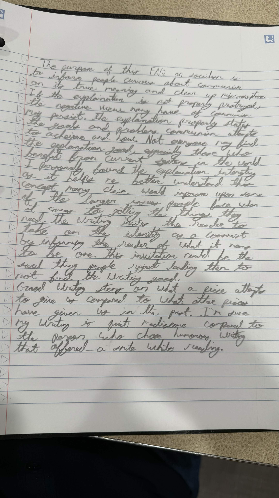
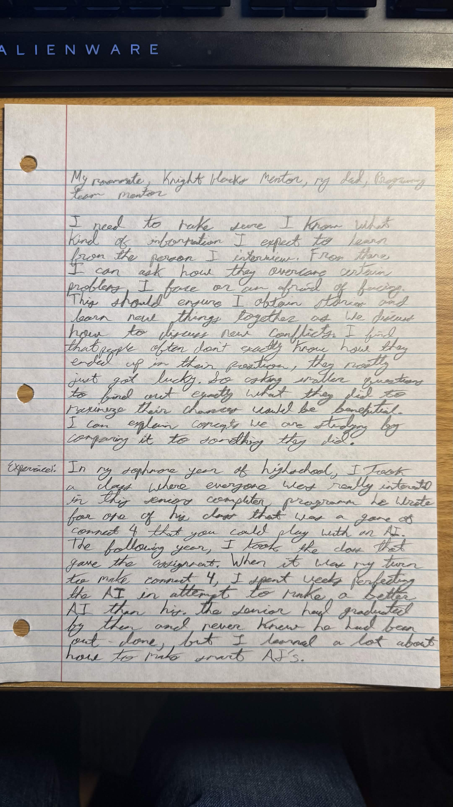
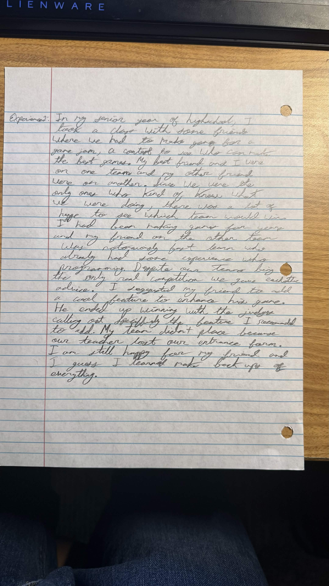
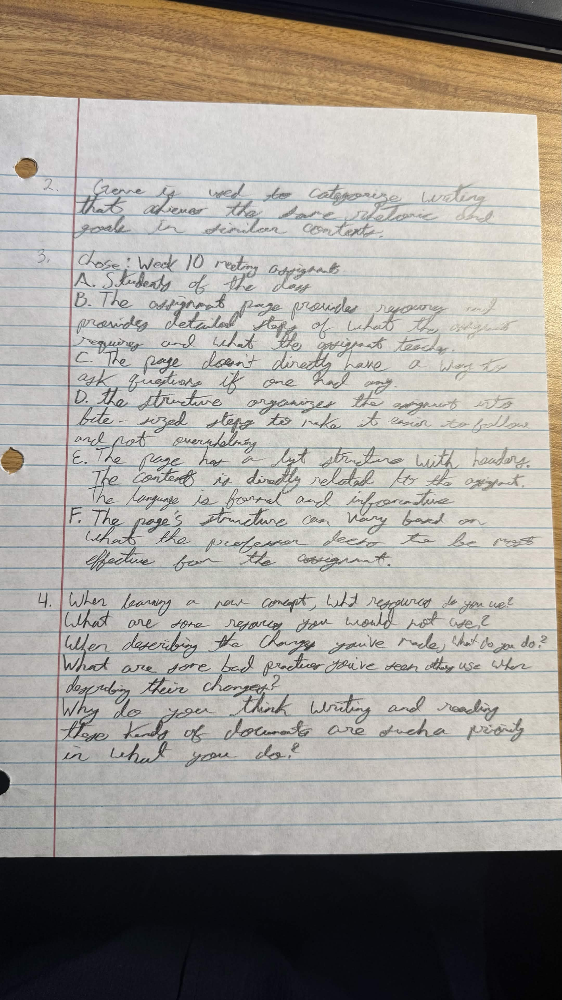
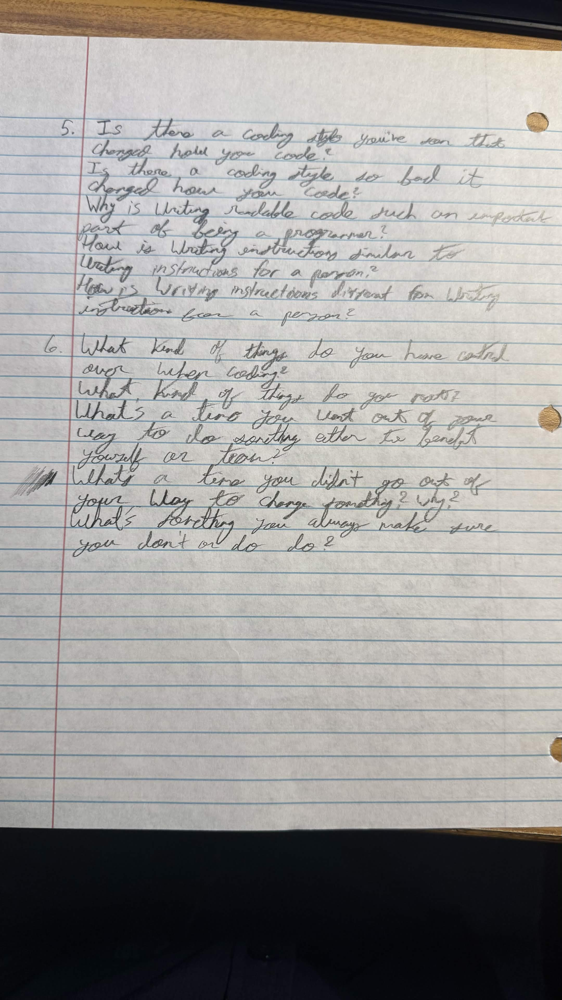

Project 2
Free Writing for MP2
Identitfied what strategies were used to properly explain and educate a reader on a complicated concept in a concise manner.
https://www.socialism101.com/#h.gh8epsixgkij



Genre Analysis
When it comes to the questions we need to think of to ask our interviewee, the concept we have to cover is very specific. Therefore it is necessary to really brainstorm what kind of writing applies to different people in our lives as at the end of the day, everyone does read and write some kind of writing in their careers.


Transcribed Quotes from Interview
(No AI was used.)
Good writing changes based on who the audience is. As the writer, you have to ensure that your reader is able to follow your message and understand it the way you want them to. Computers think differently than people, when programming, my dad states "Yeah, so the developer has to be able to anticipate all the different scenarios and do all that and be able to code for that." Computers are very literal and part of coding is being able to identify the parts where a computer might get confused and making sure they still do what you, the writer, want them to do.
In the world of programming, programmers have two audiences: the computer and other developers. Both of these audiences process code differently when trying to understand what the given code is attempting to communicate, therefore, as a programmer, it is important to ensure both audiences can eaisly understand the code you write. One way my dad ensures his code is eaisly understood by other developers is by "Using easy to understand variable names, you know, so the idea being that the next developer that picks up this project knows what's going on and can easily pick up where you left off." While a computer can quickly go step by step and almost instantly understand code it is given, people are much slower to process, like solving a large math equation in their minds. By simply naming processes in a consice way, other developers can understand what portions of code does without following each step in their mind like a computer would. This is similar to how Perri Klass describes the slang used by doctors in hospitals in her paper "Learning the Language": "These special languages contribute to a sense of closeness and professional spirit among people who are under a great deal of stress." As a developer, your goal is to get a computer to do what you want, following standards so other developers can more easily understand your code, makes sure this goal doesn't take the scenic route.
Every writer has a goal in mind, the things that make writing, good writing, are contextual rules that ensure the writer achieves that goal. While working on a project, there was a task far too large for any one developer to do alone, so my dad and four others broke it down to tackle smaller pieces individually, he states "And I know when, in those areas [the other developers would use], I'll add some extra comments so that when they start working on it, they don't have to sit there scratching their heads wondering why is the code written this way, what is this doing?" Each of the developers had to make sure their piece of the task worked well with the other pieces. My dad adding small notes for other developers, made sure those developers could quickly understand how to integrate their piece without slowing down progress on the task.